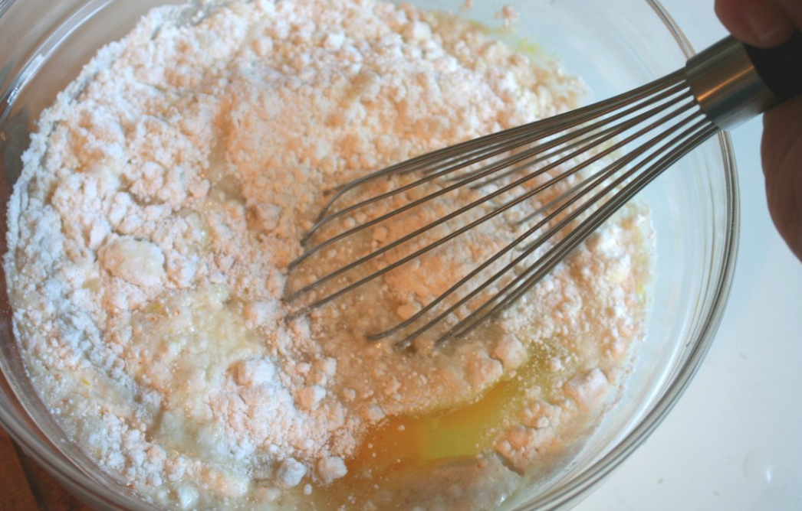
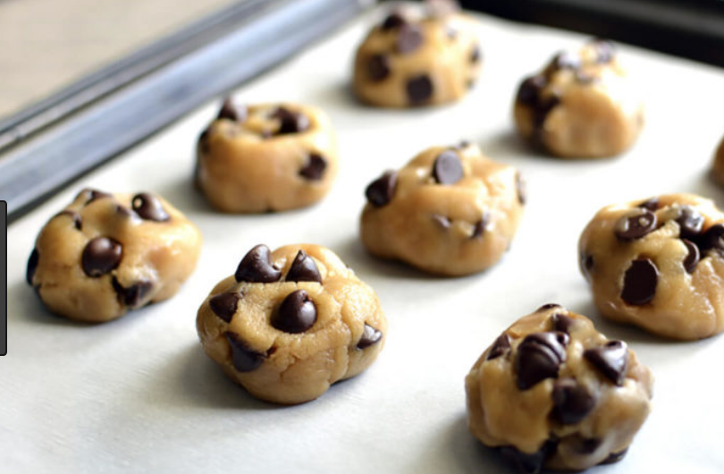
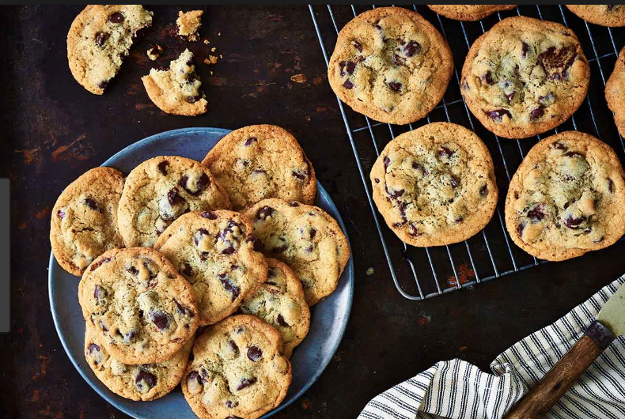

| Step 1 | Step 2 | Step 3 | Step 4 | Step 5 |
|---|---|---|---|---|
| Preheat oven to 375 degrees. | Microwave butter for 2 minutes. Pour butter into a bowl with the sugar, eggs, and vanilla. Then mix in the flour, baking soda, salt, and chocolate chips. |
Scoop the dough and roll into balls. Spray the oven sheet with cooking spray then place the dough onto the sheet. |
Cook for 12-16 minutes. | ENJOY:) |
  
If you don't like my recipe try Martha Stewart's below!